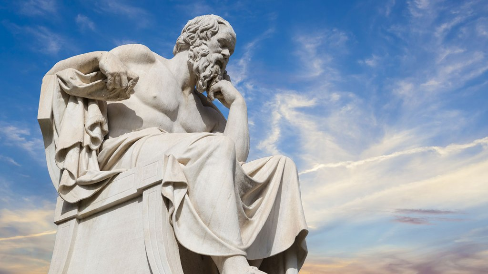

Antístenes fue el prototipo de sabio austero y solitario, con una confianza radical en el ser humano individual y una desconfianza total en las instituciones de cualquier clase.
Fue uno de los filósofos más relevantes de su época, discípulo de Sócrates, tuvo a su vez una influencia decisiva en algunas de las escuelas que se formaron en este periodo, tanto por sus teorías, como por su actitud y su forma de vida.
Es considerado precursor de la escuela cínica a través de Diógenes y de Crates, y de la escuela estoica a través de otro de sus seguidores, Zenón de Citio. Antístenes nació en Atenas, entre los años -450 y -445 y murió en al año -366 (fechas aproximadas dependiendo de las fuentes).
Participó en la batalla de Tanagra, con unos 20 años, de ahí la posible datación de su nacimiento. Su padre fue un ciudadano ateniense y su madre una esclava tracia, este mestizaje le impedía conseguir la ciudadanía ateniense, pero no parece que esto le importunara demasiado, incluso ironizaba al respecto diciendo que también la madre de los dioses era extranjera.
Comenzó su andadura filosófica como discípulo del famoso sofista Gorgias, que como todo sofista cobraba por enseñar, por lo cual se podría deducir que Antístenes o bien gozaba de una posición económica desahogada o que él mismo ejercía de sofista y cobraba por esto. En este mismo tiempo se inició también en los misterios órficos. Sin embargo, su principal aprendizaje fue con Sócrates, de quien se hizo discípulo y amigo hasta la muerte de éste.
Antístenes estuvo presente en uno de esos raros momentos estelares de la filosofía que fue la muerte de Sócrates, mientras discutían sobre la inmortalidad del alma y esperaban a que llegara el momento de beber la cicuta que le causaría la muerte. La tranquilidad del viejo maestro en tan decisivos momentos causó una profunda impresión en todos los que estaban allí presentes y es muy probable que esto influyera en la insistencia posterior de Antístenes en la ataraxía.
Un buen día Antístenes decidió prescindir de todo lo superfluo y fundar su propia escuela. Lo hizo en un gimnasio en las afueras de Atenas llamado cinosarges, que quiere decir el perro blanco (perro raudo o veloz, según otras versiones), dando lugar a la duda de si de esta circunstancia deriva el nombre de la escuela cínica.
El cambio es tan radical que se manifiesta también externamente, pasa a vestir un manto, un zurrón y un bastón, indumentaria que se convierte en el uniforme del cínico. Prescinde de una manera decisiva de todo lo que no puede llevar encima, con la intención de librarse de los caprichos de la fortuna y regir su propio destino.
El objetivo es alcanzar la felicidad y esto se consigue si uno depende solo de sí mismo. Lo fundamental para el cínico es la autarquía, es decir la independencia de todo condicionamiento exterior, la autosuficiencia, que puede aprenderse pero que requiere un esfuerzo.
Antístenes pone como ejemplo al héroe Heracles (Hércules). Atrás queda todo aquello que considera que ya no le pertenece al sabio, la familia, el dinero, la fama y sobre todo sus antiguos pensamientos. En cierta ocasión afirmó que la mayor dicha era sin duda, morir feliz. Antístenes vivía según su propia ley, la que él mismo eligió para sí, de acuerdo con la areté personal que libremente asumió.
Las leyes establecidas, las convenciones sociales no eran para este sabio, que como todos los cínicos despreciaba las normas, las instituciones, las costumbres y todo lo que representa una atadura para el hombre.
Predicaba una vuelta a la naturaleza como revulsivo a la domesticación social y cultural que se imponía en las ciudades. Poseía una amplia cultura y escribió numerosos libros, según Diógenes Laercio que los agrupa en 10 volúmenes y nos da el título de casi 60 escritos, de los cuales actualmente tan solo se conservan dos breves fragmentos (Sobre Ayax y Sobre Ulises).
<- Atrás